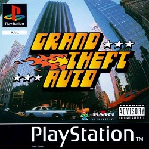

Grand Theft Auto é um dos jogos mais polêmicos e de gosto duvidoso. Seu trabalho geralmente é muito simple: deve partir de um ponto A e realizar uma determinada tarefa em um ponto B. O problema é que, para cumprir as missões, você acaba cometendo diversos crimes, entre eles atropelamentos, acidentes de trânsito, entre putras coisinhas. Não é nada educativo... O interessante, e mais divertido do todo, é que você pode trocar de carro a qualquer instante. Basta roubar o veículo dos outros. O jogo diverte muito, pois as missões são difíceis e o seu inimigo (a policia) possui inteligência artificial e faz de tudo para conseguir capturar pu matar você.
Algumas dicas que fazem o crime compensar ainda mais no videogame
Renomeie seu jogador com um desses nomes e inicie um jogo para conseguir utilizar os códigos secretos
FECK - Liberty City parte 1 e 2
TVTAN - San Andreas
SATANLIVES - 99 vidas
EXCREMENT - Multiplica seus pontos por 5
PECKINPAH - Todas as armas e o cartão para sair da prisão sem nenhuma punição
URGE - Todas as cidades parte 1 e 2, menos Vice City 2
Se você não quiser atropelar os pedestres, mantenha a buzina acionada o maximo de tempo que conseguir. Isso fará as pessoas fugirem.
No começo da fase, procure por uma garagem com um "x" em uma placa. Entre na garagem com o primeiro carro do jogo e ele será transformado em carro bomba. Basta estacionar seu veículo e apertar obotão fire para ele explodir em 5 segundos. DETALHE: prescisa ter no mínimo $5.000 para a dica funcionar.
Na primeira cidade, acesse o segundo cenário(Heist All Mighty). Quando a fase começar, atropele alguém e espere a ambulância chegar até o local. Roube a ambulância e vá até a base do exército para poder pegar o tanque. Só funciona se você usar uma ambulância ou um carro de polícia para ir até a base.